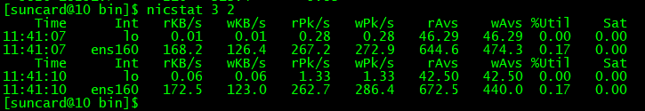

Linux监控命令---nicstat（网络流量监控利器）
nicstat:网络流量监控利器
nicstat prints out network statistics for all network cards (NICs), including packets, kilobytes per second, average packet sizes and more.
官网地址:https://blogs.oracle.com/timc/entry/nicstat_the_solaris_and_linux
下载地址:http://sourceforge.net/projects/nicstat/files/
官网摘要: nicstat is to network interfaces as "iostat" is to disks, or "prstat" is to processes. It is designed as a much better version of "netstat -i". Its differences include: * Reports bytes in & out as well as packets. * Normalizes these values to per-second rates. * Reports on all interfaces (while iterating) * Reports Utilization (rough calculation as of now) * Reports Saturation (also rough) * Prefixes statistics with the current time
如何安装:（OS：ubuntu12.04 server x86_64）
1:安装编译环境： $ sudo apt-get install build-essential
2:下载源码包： $ wget http://sourceforge.net/projects/nicstat/files/nicstat-1.92.tar.gz
3:解压： $ tar -zxvf nicstat-1.92.tar.gz
4:安装： $ cd nicstat-1.92/ $ cat README.txt #可根据此文本安装 $ cp Makefile.Linux Makefile $ uname -a Linux ubuntu-s2 3.2.0-23-generic #36-Ubuntu SMP Tue Apr 10 20:39:51 UTC 2012 x86_64 GNU/Linux $ sudo vim Makefile CFLAGS = $(COPT) -m32 #将此行修改为如下： CFLAGS = $(COPT) $ sudo make $ sudo mkdir /usr/local/share/man/man1 #如若无此步会报如下错： install:cannot create regular file `/usr/local/share/man/man1/nicstat.1': No such file or directory $ sudo make install
如何使用：
概要：（enicstat和nicstat使用方法一致） nicstat [-hvnsxpztualkM] [-iinterface] [-Sint:mbps[fd|hd]] [interval [count]]
选项： -h #显示简单的用法 -v #显示nicstat版本 -n #只统计非本地（即非回环）接口 -s #显示摘要输出（只是接收和发送的数据量） -x #显示扩展的输出 -M #以Mbps显示吞吐量,而不是默认的KB/s -p #以解析后的输出格式显示 -z #跳过采样周期内是零流量的接口 -t #tcp流量统计 -u #ucp流量统计 -a #等同于'-x -t -u' -l #只显示端口状态 -i interface[,interface...] #指定接口
字段描述：
Time #抽样结束的时间
Int #网卡名
rKB/s,InKB #每秒读的千字节数(received)
wKB/s,OutKB #每秒写的千字节数(transmitted)
rMbps,RdMbps #每秒读的百万字节数K(received)
wMbps,WrMbps #每秒写的百万字节数M(transmitted)
rPk/s,InSeg,InDG #每秒读的数据包
wPk/s,OutSeg,OutDG #每秒写的数据包
rAvs #平均读的数据包大小
wAvs #平均写的数据包大小
%Util #接口的利用率百分比
Sat #每秒的错误数，接口接近饱和的一个指标
更多请参考手册
示例： $ nicstat 3 #每3秒显示一次 $ nicstat 3 5 #每3秒显示一次共显示5次 $ nicstat -i eth0 #只显示eth0的状态 $ nicstat -M #以Mbps为单位显示吞吐量
$ nicstat -i ens160 1s > test_1tread_30min_101net.txt # 将网卡饱和度写入文件中：

其他详情可使用：man nicstat进行了解
转自：http://blog.51cto.com/xuclv/1157208


· 聊一聊系统重构
· CSS 高阶小技巧 - 角向渐变的妙用！
· Three.js 进阶之旅：物理效果-3D乒乓球小游戏
· ASP.NET Core 使用 filter 和 redis 实现接口防重
· 聊聊「订单」业务的设计与实现
· 【活动回顾】后疫情时代，教育行业的增量和变量
· 红松：构建全新的中老年兴趣社交平台
· 活动回顾：Flutter实时音视频应用场景实践
· 为语音社交平台加一个防护罩，即构上线实时语音安全方案
· 音视频开发进阶——YUV与RGB的采样与存储格式